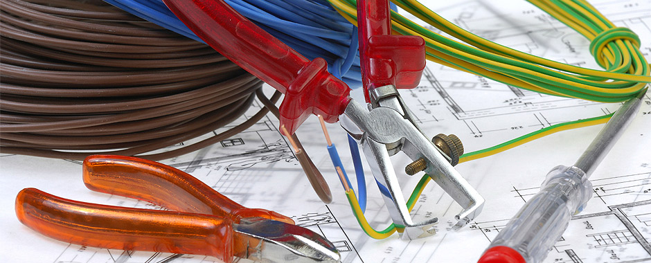

Barata Elétrica
Trabalho realizado em grupo por todos os alunos cursando engenharia no primeiro semestre.
Matéria: Natureza do Design
Cronograma
Período: Primeiro Semestre
Data:
agenda
Duração: 3 semanas
Papel do Aluno
Desenho de sketches
Desenhos instrumentados e não instrumentados
Design básico
Instrumentos e Técnicas
Fusion
Cura
Impressoras 3D